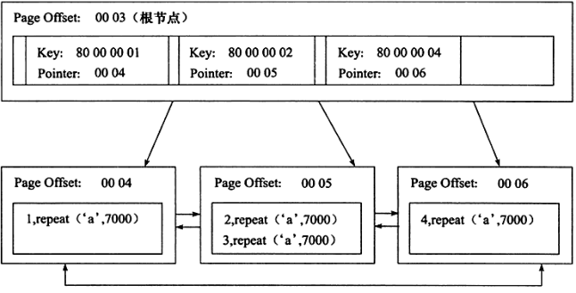
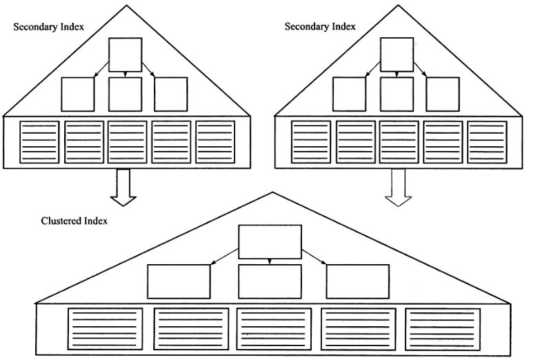
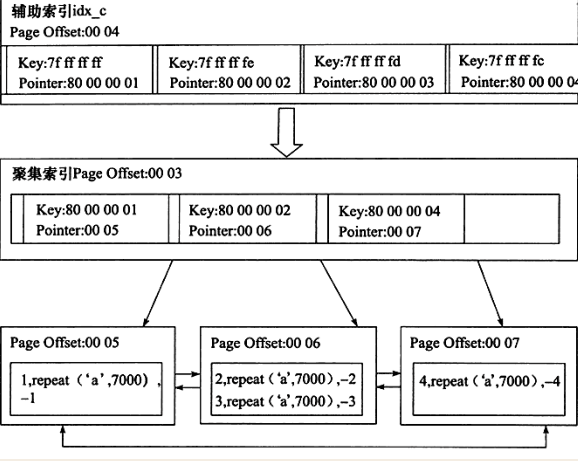
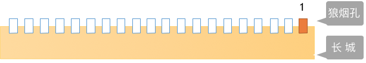
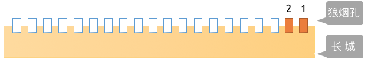

一 介绍
为何要有索引?
一般的应用系统，读写比例在10:1左右，而且插入操作和一般的更新操作很少出现性能问题，在生产环境中，我们遇到最多的，也是最容易出问题的，还是一些复杂的查询操作，因此对查询语句的优化显然是重中之重。说起加速查询，就不得不提到索引了。
什么是索引？
索引在MySQL中也叫做“键”，是存储引擎用于快速找到记录的一种数据结构。索引对于良好的性能
非常关键，尤其是当表中的数据量越来越大时，索引对于性能的影响愈发重要。
索引优化应该是对查询性能优化最有效的手段了。索引能够轻易将查询性能提高好几个数量级。
索引相当于字典的音序表，如果要查某个字，如果不使用音序表，则需要从几百页中逐页去查。
30
10 40
5 15 35 66
1 6 11 19 21 39 55 100
你是否对索引存在误解？
索引是应用程序设计和开发的一个重要方面。若索引太多，应用程序的性能可能会受到影响。而索引太少，对查询性能又会产生影响，要找到一个平衡点，这对应用程序的性能至关重要。一些开发人员总是在事后才想起添加索引----我一直认为，这源于一种错误的开发模式。如果知道数据的使用，从一开始就应该在需要处添加索引。开发人员往往对数据库的使用停留在应用的层面，比如编写SQL语句、存储过程之类，他们甚至可能不知道索引的存在，或认为事后让相关DBA加上即可。DBA往往不够了解业务的数据流，而添加索引需要通过监控大量的SQL语句进而从中找到问题，这个步骤所需的时间肯定是远大于初始添加索引所需的时间，并且可能会遗漏一部分的索引。当然索引也并不是越多越好，我曾经遇到过这样一个问题：某台MySQL服务器iostat显示磁盘使用率一直处于100%25，经过分析后发现是由于开发人员添加了太多的索引，在删除一些不必要的索引之后，磁盘使用率马上下降为20%25。可见索引的添加也是非常有技术含量的。
二 索引的原理
一 索引原理
索引的目的在于提高查询效率，与我们查阅图书所用的目录是一个道理：先定位到章，然后定位到该章下的一个小节，然后找到页数。相似的例子还有：查字典，查火车车次，飞机航班等
本质都是：通过不断地缩小想要获取数据的范围来筛选出最终想要的结果，同时把随机的事件变成顺序的事件，也就是说，有了这种索引机制，我们可以总是用同一种查找方式来锁定数据。
数据库也是一样，但显然要复杂的多，因为不仅面临着等值查询，还有范围查询(>、<、between、in)、模糊查询(like)、并集查询(or)等等。数据库应该选择怎么样的方式来应对所有的问题呢？我们回想字典的例子，能不能把数据分成段，然后分段查询呢？最简单的如果1000条数据，1到100分成第一段，101到200分成第二段，201到300分成第三段......这样查第250条数据，只要找第三段就可以了，一下子去除了90%25的无效数据。但如果是1千万的记录呢，分成几段比较好？稍有算法基础的同学会想到搜索树，其平均复杂度是lgN，具有不错的查询性能。但这里我们忽略了一个关键的问题，复杂度模型是基于每次相同的操作成本来考虑的。而数据库实现比较复杂，一方面数据是保存在磁盘上的，另外一方面为了提高性能，每次又可以把部分数据读入内存来计算，因为我们知道访问磁盘的成本大概是访问内存的十万倍左右，所以简单的搜索树难以满足复杂的应用场景。
二 磁盘IO与预读
前面提到了访问磁盘，那么这里先简单介绍一下磁盘IO和预读，磁盘读取数据靠的是机械运动，每次读取数据花费的时间可以分为寻道时间、旋转延迟、传输时间三个部分，寻道时间指的是磁臂移动到指定磁道所需要的时间，主流磁盘一般在5ms以下；旋转延迟就是我们经常听说的磁盘转速，比如一个磁盘7200转，表示每分钟能转7200次，也就是说1秒钟能转120次，旋转延迟就是1/120/2 = 4.17ms；传输时间指的是从磁盘读出或将数据写入磁盘的时间，一般在零点几毫秒，相对于前两个时间可以忽略不计。那么访问一次磁盘的时间，即一次磁盘IO的时间约等于5+4.17 = 9ms左右，听起来还挺不错的，但要知道一台500 -MIPS（Million Instructions Per Second）的机器每秒可以执行5亿条指令，因为指令依靠的是电的性质，换句话说执行一次IO的时间可以执行约450万条指令，数据库动辄十万百万乃至千万级数据，每次9毫秒的时间，显然是个灾难。下图是计算机硬件延迟的对比图，供大家参考：

考虑到磁盘IO是非常高昂的操作，计算机操作系统做了一些优化，当一次IO时，不光把当前磁盘地址的数据，而是把相邻的数据也都读取到内存缓冲区内，因为局部预读性原理告诉我们，当计算机访问一个地址的数据的时候，与其相邻的数据也会很快被访问到。每一次IO读取的数据我们称之为一页(page)。具体一页有多大数据跟操作系统有关，一般为4k或8k，也就是我们读取一页内的数据时候，实际上才发生了一次IO，这个理论对于索引的数据结构设计非常有帮助。
三 索引的数据结构
前面讲了索引的基本原理，数据库的复杂性，又讲了操作系统的相关知识，目的就是让大家了解，任何一种数据结构都不是凭空产生的，一定会有它的背景和使用场景，我们现在总结一下，我们需要这种数据结构能够做些什么，其实很简单，那就是：每次查找数据时把磁盘IO次数控制在一个很小的数量级，最好是常数数量级。那么我们就想到如果一个高度可控的多路搜索树是否能满足需求呢？就这样，b+树应运而生（B+树是通过二叉查找树，再由平衡二叉树，B树演化而来）。

如上图，是一颗b+树，关于b+树的定义可以参见B+树，这里只说一些重点，浅蓝色的块我们称之为一个磁盘块，可以看到每个磁盘块包含几个数据项（深蓝色所示）和指针（黄色所示），如磁盘块1包含数据项17和35，包含指针P1、P2、P3，P1表示小于17的磁盘块，P2表示在17和35之间的磁盘块，P3表示大于35的磁盘块。真实的数据存在于叶子节点即3、5、9、10、13、15、28、29、36、60、75、79、90、99。非叶子节点只不存储真实的数据，只存储指引搜索方向的数据项，如17、35并不真实存在于数据表中。
###b+树的查找过程 如图所示，如果要查找数据项29，那么首先会把磁盘块1由磁盘加载到内存，此时发生一次IO，在内存中用二分查找确定29在17和35之间，锁定磁盘块1的P2指针，内存时间因为非常短（相比磁盘的IO）可以忽略不计，通过磁盘块1的P2指针的磁盘地址把磁盘块3由磁盘加载到内存，发生第二次IO，29在26和30之间，锁定磁盘块3的P2指针，通过指针加载磁盘块8到内存，发生第三次IO，同时内存中做二分查找找到29，结束查询，总计三次IO。真实的情况是，3层的b+树可以表示上百万的数据，如果上百万的数据查找只需要三次IO，性能提高将是巨大的，如果没有索引，每个数据项都要发生一次IO，那么总共需要百万次的IO，显然成本非常非常高。
###b+树性质 1.索引字段要尽量的小：通过上面的分析，我们知道IO次数取决于b+数的高度h，假设当前数据表的数据为N，每个磁盘块的数据项的数量是m，则有h=㏒(m+1)N，当数据量N一定的情况下，m越大，h越小；而m = 磁盘块的大小 / 数据项的大小，磁盘块的大小也就是一个数据页的大小，是固定的，如果数据项占的空间越小，数据项的数量越多，树的高度越低。这就是为什么每个数据项，即索引字段要尽量的小，比如int占4字节，要比bigint8字节少一半。这也是为什么b+树要求把真实的数据放到叶子节点而不是内层节点，一旦放到内层节点，磁盘块的数据项会大幅度下降，导致树增高。当数据项等于1时将会退化成线性表。 2.索引的最左匹配特性：当b+树的数据项是复合的数据结构，比如(name,age,sex)的时候，b+数是按照从左到右的顺序来建立搜索树的，比如当(张三,20,F)这样的数据来检索的时候，b+树会优先比较name来确定下一步的所搜方向，如果name相同再依次比较age和sex，最后得到检索的数据；但当(20,F)这样的没有name的数据来的时候，b+树就不知道下一步该查哪个节点，因为建立搜索树的时候name就是第一个比较因子，必须要先根据name来搜索才能知道下一步去哪里查询。比如当(张三,F)这样的数据来检索时，b+树可以用name来指定搜索方向，但下一个字段age的缺失，所以只能把名字等于张三的数据都找到，然后再匹配性别是F的数据了， 这个是非常重要的性质，即索引的最左匹配特性。
四 聚集索引与辅助索引
在数据库中，B+树的高度一般都在2~4层，这也就是说查找某一个键值的行记录时最多只需要2到4次IO，这倒不错。因为当前一般的机械硬盘每秒至少可以做100次IO，2~4次的IO意味着查询时间只需要0.02~0.04秒。
数据库中的B+树索引可以分为聚集索引（clustered index）和辅助索引（secondary index），
聚集索引与辅助索引相同的是：不管是聚集索引还是辅助索引，其内部都是B+树的形式，即高度是平衡的，叶子结点存放着所有的数据。
聚集索引与辅助索引不同的是：叶子结点存放的是否是一整行的信息
1、聚集索引
#InnoDB存储引擎表示索引组织表，即表中数据按照主键顺序存放。而聚集索引（clustered index）就是按照每张表的主键构造一棵B+树，同时叶子结点存放的即为整张表的行记录数据，也将聚集索引的叶子结点称为数据页。聚集索引的这个特性决定了索引组织表中数据也是索引的一部分。同B+树数据结构一样，每个数据页都通过一个双向链表来进行链接。
#如果未定义主键，MySQL取第一个唯一索引（unique）而且只含非空列（NOT NULL）作为主键，InnoDB使用它作为聚簇索引。
#如果没有这样的列，InnoDB就自己产生一个这样的ID值，它有六个字节，而且是隐藏的，使其作为聚簇索引。
#由于实际的数据页只能按照一棵B+树进行排序，因此每张表只能拥有一个聚集索引。在多少情况下，查询优化器倾向于采用聚集索引。因为聚集索引能够在B+树索引的叶子节点上直接找到数据。此外由于定义了数据的逻辑顺序，聚集索引能够特别快地访问针对范围值得查询。

聚集索引的好处之一：它对主键的排序查找和范围查找速度非常快，叶子节点的数据就是用户所要查询的数据。如用户需要查找一张表，查询最后的10位用户信息，由于B+树索引是双向链表，所以用户可以快速找到最后一个数据页，并取出10条记录
#参照第六小结测试索引的准备阶段来创建出表s1
mysql> desc s1; #最开始没有主键
+--------+-------------+------+-----+---------+-------+
| Field | Type | Null | Key | Default | Extra |
+--------+-------------+------+-----+---------+-------+
| id | int(11) | NO | | NULL | |
| name | varchar(20) | YES | | NULL | |
| gender | char(6) | YES | | NULL | |
| email | varchar(50) | YES | | NULL | |
+--------+-------------+------+-----+---------+-------+
4 rows in set (0.00 sec)
mysql> explain select * from s1 order by id desc limit 10; #Using filesort，需要二次排序
+----+-------------+-------+------------+------+---------------+------+---------+------+---------+----------+----------------+
| id | select_type | table | partitions | type | possible_keys | key | key_len | ref | rows | filtered | Extra |
+----+-------------+-------+------------+------+---------------+------+---------+------+---------+----------+----------------+
| 1 | SIMPLE | s1 | NULL | ALL | NULL | NULL | NULL | NULL | 2633472 | 100.00 | Using filesort |
+----+-------------+-------+------------+------+---------------+------+---------+------+---------+----------+----------------+
1 row in set, 1 warning (0.11 sec)
mysql> alter table s1 add primary key(id); #添加主键
Query OK, 0 rows affected (13.37 sec)
Records: 0 Duplicates: 0 Warnings: 0
mysql> explain select * from s1 order by id desc limit 10; #基于主键的聚集索引在创建完毕后就已经完成了排序，无需二次排序
+----+-------------+-------+------------+-------+---------------+---------+---------+------+------+----------+-------+
| id | select_type | table | partitions | type | possible_keys | key | key_len | ref | rows | filtered | Extra |
+----+-------------+-------+------------+-------+---------------+---------+---------+------+------+----------+-------+
| 1 | SIMPLE | s1 | NULL | index | NULL | PRIMARY | 4 | NULL | 10 | 100.00 | NULL |
+----+-------------+-------+------------+-------+---------------+---------+---------+------+------+----------+-------+
1 row in set, 1 warning (0.04 sec)
聚集索引的好处之二：范围查询（range query），即如果要查找主键某一范围内的数据，通过叶子节点的上层中间节点就可以得到页的范围，之后直接读取数据页即可
mysql> alter table s1 drop primary key;
Query OK, 2699998 rows affected (24.23 sec)
Records: 2699998 Duplicates: 0 Warnings: 0
mysql> desc s1;
+--------+-------------+------+-----+---------+-------+
| Field | Type | Null | Key | Default | Extra |
+--------+-------------+------+-----+---------+-------+
| id | int(11) | NO | | NULL | |
| name | varchar(20) | YES | | NULL | |
| gender | char(6) | YES | | NULL | |
| email | varchar(50) | YES | | NULL | |
+--------+-------------+------+-----+---------+-------+
4 rows in set (0.12 sec)
mysql> explain select * from s1 where id > 1 and id < 1000000; #没有聚集索引，预估需要检索的rows数如下
+----+-------------+-------+------------+------+---------------+------+---------+------+---------+----------+-------------+
| id | select_type | table | partitions | type | possible_keys | key | key_len | ref | rows | filtered | Extra |
+----+-------------+-------+------------+------+---------------+------+---------+------+---------+----------+-------------+
| 1 | SIMPLE | s1 | NULL | ALL | NULL | NULL | NULL | NULL | 2690100 | 11.11 | Using where |
+----+-------------+-------+------------+------+---------------+------+---------+------+---------+----------+-------------+
1 row in set, 1 warning (0.00 sec)
mysql> alter table s1 add primary key(id);
Query OK, 0 rows affected (16.25 sec)
Records: 0 Duplicates: 0 Warnings: 0
mysql> explain select * from s1 where id > 1 and id < 1000000; #有聚集索引，预估需要检索的rows数如下
+----+-------------+-------+------------+-------+---------------+---------+---------+------+---------+----------+-------------+
| id | select_type | table | partitions | type | possible_keys | key | key_len | ref | rows | filtered | Extra |
+----+-------------+-------+------------+-------+---------------+---------+---------+------+---------+----------+-------------+
| 1 | SIMPLE | s1 | NULL | range | PRIMARY | PRIMARY | 4 | NULL | 1343355 | 100.00 | Using where |
+----+-------------+-------+------------+-------+---------------+---------+---------+------+---------+----------+-------------+
1 row in set, 1 warning (0.09 sec)
2、辅助索引
表中除了聚集索引外其他索引都是辅助索引（Secondary Index，也称为非聚集索引），与聚集索引的区别是：辅助索引的叶子节点不包含行记录的全部数据。
叶子节点除了包含键值以外，每个叶子节点中的索引行中还包含一个书签（bookmark）。该书签用来告诉InnoDB存储引擎去哪里可以找到与索引相对应的行数据。
由于InnoDB存储引擎是索引组织表，因此InnoDB存储引擎的辅助索引的书签就是相应行数据的聚集索引键。如下图

辅助索引的存在并不影响数据在聚集索引中的组织，因此每张表上可以有多个辅助索引，但只能有一个聚集索引。当通过辅助索引来寻找数据时，InnoDB存储引擎会遍历辅助索引并通过叶子级别的指针获得只想主键索引的主键，然后再通过主键索引来找到一个完整的行记录。
举例来说，如果在一棵高度为3的辅助索引树种查找数据，那需要对这个辅助索引树遍历3次找到指定主键，如果聚集索引树的高度同样为3，那么还需要对聚集索引树进行3次查找，最终找到一个完整的行数据所在的页，因此一共需要6次逻辑IO访问才能得到最终的一个数据页。

五 MySQL索引管理
一 功能
#1. 索引的功能就是加速查找
#2. mysql中的primary key，unique，联合唯一也都是索引，这些索引除了加速查找以外，还有约束的功能
二 MySQL常用的索引
普通索引INDEX：加速查找
唯一索引：
-主键索引PRIMARY KEY：加速查找+约束（不为空、不能重复）
-唯一索引UNIQUE:加速查找+约束（不能重复）
联合索引：
-PRIMARY KEY(id,name):联合主键索引
-UNIQUE(id,name):联合唯一索引
-INDEX(id,name):联合普通索引
各个索引的应用场景
举个例子来说，比如你在为某商场做一个会员卡的系统。
这个系统有一个会员表
有下列字段：
会员编号 INT
会员姓名 VARCHAR(10)
会员身份证号码 VARCHAR(18)
会员电话 VARCHAR(10)
会员住址 VARCHAR(50)
会员备注信息 TEXT
那么这个 会员编号，作为主键，使用 PRIMARY
会员姓名 如果要建索引的话，那么就是普通的 INDEX
会员身份证号码 如果要建索引的话，那么可以选择 UNIQUE （唯一的，不允许重复）
#除此之外还有全文索引，即FULLTEXT
会员备注信息 ， 如果需要建索引的话，可以选择全文搜索。
用于搜索很长一篇文章的时候，效果最好。
用在比较短的文本，如果就一两行字的，普通的 INDEX 也可以。
但其实对于全文搜索，我们并不会使用MySQL自带的该索引，而是会选择第三方软件如Sphinx，专门来做全文搜索。
#其他的如空间索引SPATIAL，了解即可，几乎不用
三 索引的两大类型hash与btree
#我们可以在创建上述索引的时候，为其指定索引类型，分两类
hash类型的索引：查询单条快，范围查询慢
btree类型的索引：b+树，层数越多，数据量指数级增长（我们就用它，因为innodb默认支持它）
#不同的存储引擎支持的索引类型也不一样
InnoDB 支持事务，支持行级别锁定，支持 B-tree、Full-text 等索引，不支持 Hash 索引；
MyISAM 不支持事务，支持表级别锁定，支持 B-tree、Full-text 等索引，不支持 Hash 索引；
Memory 不支持事务，支持表级别锁定，支持 B-tree、Hash 等索引，不支持 Full-text 索引；
NDB 支持事务，支持行级别锁定，支持 Hash 索引，不支持 B-tree、Full-text 等索引；
Archive 不支持事务，支持表级别锁定，不支持 B-tree、Hash、Full-text 等索引；
四 创建/删除索引的语法
#方法一：创建表时
CREATE TABLE 表名 (
字段名1 数据类型 [完整性约束条件…],
字段名2 数据类型 [完整性约束条件…],
[UNIQUE | FULLTEXT | SPATIAL ] INDEX | KEY
[索引名] (字段名[(长度)] [ASC |DESC])
);
#方法二：CREATE在已存在的表上创建索引
CREATE [UNIQUE | FULLTEXT | SPATIAL ] INDEX 索引名
ON 表名 (字段名[(长度)] [ASC |DESC]) ;
#方法三：ALTER TABLE在已存在的表上创建索引
ALTER TABLE 表名 ADD [UNIQUE | FULLTEXT | SPATIAL ] INDEX
索引名 (字段名[(长度)] [ASC |DESC]) ;
#删除索引：DROP INDEX 索引名 ON 表名字;
示范
#方式一
create table t1(
id int,
name char,
age int,
sex enum('male','female'),
unique key uni_id(id),
index ix_name(name) #index没有key
);
#方式二
create index ix_age on t1(age);
#方式三
alter table t1 add index ix_sex(sex);
#查看
mysql> show create table t1;
| t1 | CREATE TABLE `t1` (
`id` int(11) DEFAULT NULL,
`name` char(1) DEFAULT NULL,
`age` int(11) DEFAULT NULL,
`sex` enum('male','female') DEFAULT NULL,
UNIQUE KEY `uni_id` (`id`),
KEY `ix_name` (`name`),
KEY `ix_age` (`age`),
KEY `ix_sex` (`sex`)
) ENGINE=InnoDB DEFAULT CHARSET=latin1
六 测试索引
一 准备
#1. 准备表
create table s1(
id int,
name varchar(20),
gender char(6),
email varchar(50)
);
#2. 创建存储过程，实现批量插入记录
delimiter $$ #声明存储过程的结束符号为$$
create procedure auto_insert1()
BEGIN
declare i int default 1;
while(i<3000000)do
insert into s1 values(i,'egon','male',concat('egon',i,'@oldboy'));
set i=i+1;
end while;
END$$ #$$结束
delimiter ; #重新声明分号为结束符号
#3. 查看存储过程
show create procedure auto_insert1\G
#4. 调用存储过程
call auto_insert1();
二 在没有索引的前提下测试查询速度
#无索引：mysql根本就不知道到底是否存在id等于333333333的记录，只能把数据表从头到尾扫描一遍，此时有多少个磁盘块就需要进行多少IO操作，所以查询速度很慢
mysql> select * from s1 where id=333333333;
Empty set (0.33 sec)
三 在表中已经存在大量数据的前提下，为某个字段段建立索引，建立速度会很慢

四 在索引建立完毕后，以该字段为查询条件时，查询速度提升明显

PS：
mysql先去索引表里根据b+树的搜索原理很快搜索到id等于333333333的记录不存在，IO大大降低，因而速度明显提升
我们可以去mysql的data目录下找到该表，可以看到占用的硬盘空间多了
需要注意，如下图

五 总结
#1. 一定是为搜索条件的字段创建索引，比如select * from s1 where id = 333;就需要为id加上索引
#2. 在表中已经有大量数据的情况下，建索引会很慢，且占用硬盘空间，建完后查询速度加快
比如create index idx on s1(id);会扫描表中所有的数据，然后以id为数据项，创建索引结构，存放于硬盘的表中。
建完以后，再查询就会很快了。
#3. 需要注意的是：innodb表的索引会存放于s1.ibd文件中，而myisam表的索引则会有单独的索引文件table1.MYI
MySAM索引文件和数据文件是分离的，索引文件仅保存数据记录的地址。而在innodb中，表数据文件本身就是按照B+Tree（BTree即Balance True）组织的一个索引结构，这棵树的叶节点data域保存了完整的数据记录。这个索引的key是数据表的主键，因此innodb表数据文件本身就是主索引。
因为inndob的数据文件要按照主键聚集，所以innodb要求表必须要有主键（Myisam可以没有），如果没有显式定义，则mysql系统会自动选择一个可以唯一标识数据记录的列作为主键，如果不存在这种列，则mysql会自动为innodb表生成一个隐含字段作为主键，这字段的长度为6个字节，类型为长整型.